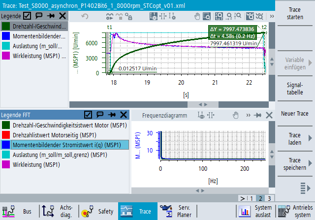

| Hinweis |
|
Für die Nutzung dieser Funktion ist eine Expert-Trace-Lizenz erforderlich, siehe "Expert-Trace-Funktionen". |
Das FFT-Diagramm zeigt die Fast-Fourier-Transformation für die Messsignale an, die aktuell im Trace-Widget angezeigt werden. Das FFT-Widget kann mit einem Symbol in der Symbolleiste des Trace-Widgets oder über das Kontextmenü im Trace-Widget geöffnet und geschlossen werden. Es kann auch über das Symbol X auf dem Fensterrahmen geschlossen werden. Das Widget kann im Anwendungsfenster angedockt oder auf einem PC/IPC-System abgedockt als frei bewegliches Fenster verwendet werden.
Die horizontale Achse des FFT-Diagramms zeigt den Frequenzbereich der Trace-Messung an. Die obere Frequenzgrenze wird so berechnet, dass 0,5 durch die niedrigste Abtastrate in der Trace-Konfiguration dividiert wird.
Die vertikale Achse zeigt die Amplitude von Signalen für die angezeigten Frequenzen an. Das Ergebnis wird mit der Anzahl der Messpunkte innerhalb des Berechnungsbereichs normalisiert.
Wenn es keine Messdaten im Trace-Widget gibt, ist das FFT-Diagramm leer und zeigt nur eine Meldung an, dass keine Daten verfügbar sind. Sobald Messdaten vorhanden sind, wird die FFT automatisch berechnet und angezeigt.
Wenn die ersten beiden Messcursor im Trace-Widget eingeschaltet sind, wird das FFT-Diagramm nur für den Messbereich zwischen den beiden Cursors berechnet. Dies wird im Trace-Diagramm dadurch kenntlich gemacht, dass der Bereich außerhalb der Cursors ausgegraut ist. Wenn die Messcursors bewegt werden, wird die FFT dynamisch neu berechnet.
Immer wenn das FFT-Widget eingeschaltet und sichtbar wird, werden automatisch die ersten beiden Messcursor im Trace-Diagramm aktiviert.
Wenn die ersten beiden Messcursor im Trace-Diagramm ausgeschaltet sind, wird die FFT für den gesamten Bereich der Messdaten berechnet.
Es gibt einen unteren und einen oberen Grenzwert für den Messbereich, für den die FFT berechnet werden kann. Die Differenz zwischen den Cursorpositionen (oder dem gesamten Messbereich, wenn die Cursors ausgeschaltet sind) muss zwischen 0,01 und 1000 Sekunden liegen. Wenn der aktuelle Bereich außerhalb dieser Grenzwerte liegt, verschwindet das FFT-Diagramm und stattdessen wird eine Warnung angezeigt.
Wenn eine Trace-Aufzeichnung mit kontinuierlicher Visualisierung gestartet wird und während der Aufzeichnung Messdaten angezeigt werden, wird das FFT-Diagramm auch kontinuierlich aktualisiert. Die angezeigten Ergebnisse werden für den gesamten Bereich der aufgezeichneten Daten berechnet. Oder, wenn in den Stopp-Trigger-Einstellungen ein Ringpuffer konfiguriert ist, dann für den Inhalt des Ringpuffers.
